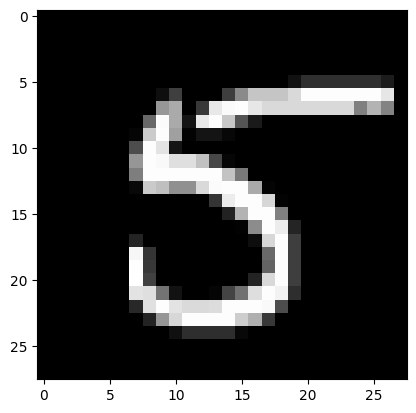
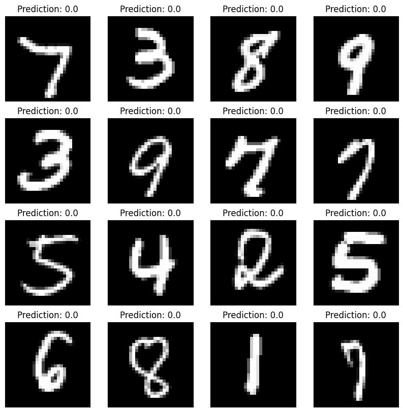

import numpy as np
import matplotlib.pyplot as plt
import torch
import torch.nn as nn
import torch.nn.functional as F
from torchvision.datasets import MNIST
from sklearn.model_selection import train_test_split
from torch.optim import Adam
from torch.autograd import VariableIn this blog let’s build a MNIST Classifier (one vs REST) where we will classify whether a given image is of the digit 2 or not.
Let’s first import the necessary libraries
# Download MNIST dataset
mnist_data = MNIST(root='./data', download=True)# 60000 images of size 28x28
data = mnist_data.data.numpy()
data.shape(60000, 28, 28)train_image,test_image,train_label,test_label = train_test_split(data, mnist_data.targets.numpy(), test_size=0.2, random_state=42)
train_image.shape, train_label.shape, test_image.shape, test_label.shape((48000, 28, 28), (48000,), (12000, 28, 28), (12000,))sample_image = train_image[0]
plt.imshow(sample_image, cmap='gray')<matplotlib.image.AxesImage at 0x294a76e90>
print(train_label[12:17])
# 1 as label for digit 2 and 0 otherwise
train_label[train_label!=2] = 0
train_label[train_label==2] = 1
test_label[test_label!=2] = 0
test_label[test_label==2] = 1
# Convert to torch tensors
train_image = torch.from_numpy(train_image).long()
test_image = torch.from_numpy(test_image).long()
train_label = torch.from_numpy(train_label).float()
test_label = torch.from_numpy(test_label).float()
train_label[12:17] [8 1 1 2 6]tensor([0., 0., 0., 1., 0.])train_image = train_image.view(-1, 1,28,28).float()
test_image = test_image.view(-1,1,28,28).float()
train_image = train_image/255.
test_image = test_image/255.
train = torch.utils.data.TensorDataset(train_image,train_label)
test = torch.utils.data.TensorDataset(test_image,test_label)
BATCH_SIZE = 64
train_loader = torch.utils.data.DataLoader(train, batch_size = BATCH_SIZE, shuffle = False)
test_loader = torch.utils.data.DataLoader(test, batch_size = BATCH_SIZE, shuffle = False)# Define the model
class cnn_Model(nn.Module):
def __init__(self):
super(cnn_Model, self).__init__()
self.conv1 = nn.Conv2d(1, 6, 5, padding=2)
self.pool = nn.MaxPool2d(2,stride=2)
self.conv2 = nn.Conv2d(6, 16, 5, padding=0)
self.R = nn.ReLU()
self.fc1 = nn.Linear(400, 120)
self.fc2 = nn.Linear(120, 84)
self.fc3 = nn.Linear(84, 1)
self.S = nn.Sigmoid()
def forward(self, x):
x = self.conv1(x)
x = self.R(x)
x = self.pool(x)
x = self.conv2(x)
x = self.R(x)
x = self.pool(x)
x = x.view(-1, 400)
x = self.fc1(x)
x = self.R(x)
x = self.fc2(x)
x = self.R(x)
x = self.fc3(x)
# x = self.S(x)
return x.squeeze()
def accuracy(y_pred,y_true):
y_pred = y_pred.detach().numpy()
y_true = y_true.detach().numpy()
y_pred[y_pred>=0.5] = 1
y_pred[y_pred<0.5] = 0
return y_pred,y_true
def fit(model, train_loader,learning_rate=0.001,random_seed=42):
torch.manual_seed(random_seed)
optimizer = Adam(model.parameters(),lr=learning_rate)
error = nn.BCEWithLogitsLoss()
EPOCHS = 5
predictions = []
# model.train()
for epoch in range(EPOCHS):
correct = 0
for batch_idx, (X_batch, y_batch) in enumerate(train_loader):
var_X_batch = Variable(X_batch).float()
var_y_batch = Variable(y_batch)
optimizer.zero_grad()
output = model(var_X_batch)
loss = error(output, var_y_batch)
loss.backward()
optimizer.step()
y_pred,y_true = accuracy(output.data,var_y_batch)
predictions.extend(y_pred)
correct += (output.data == var_y_batch).sum()
if batch_idx % 50 == 0:
print('Epoch : {} [{}/{} ({:.0f}%)]\tLoss: {:.6f}\t Accuracy:{:.3f}%'.format(
epoch, batch_idx*len(X_batch), len(train_loader.dataset), 100.*batch_idx / len(train_loader), loss.data.item(), float(correct*100) / float(BATCH_SIZE*(batch_idx+1))))
def instantiate_and_train(train_loader,Model,random_seed=42):
torch.manual_seed(random_seed)
model = Model()
fit(model,train_loader,random_seed=random_seed)
instantiate_and_train(train_loader,cnn_Model)Epoch : 0 [0/48000 (0%)] Loss: 0.711395 Accuracy:92.188%
Epoch : 0 [3200/48000 (7%)] Loss: 0.320103 Accuracy:89.951%
Epoch : 0 [6400/48000 (13%)] Loss: 0.072405 Accuracy:90.470%
Epoch : 0 [9600/48000 (20%)] Loss: 0.037177 Accuracy:92.643%
Epoch : 0 [12800/48000 (27%)] Loss: 0.114377 Accuracy:93.905%
Epoch : 0 [16000/48000 (33%)] Loss: 0.013866 Accuracy:94.746%
Epoch : 0 [19200/48000 (40%)] Loss: 0.019222 Accuracy:95.359%
Epoch : 0 [22400/48000 (47%)] Loss: 0.003240 Accuracy:95.873%
Epoch : 0 [25600/48000 (53%)] Loss: 0.037296 Accuracy:96.228%
Epoch : 0 [28800/48000 (60%)] Loss: 0.054712 Accuracy:96.504%
Epoch : 0 [32000/48000 (67%)] Loss: 0.059329 Accuracy:96.775%
Epoch : 0 [35200/48000 (73%)] Loss: 0.007022 Accuracy:97.008%
Epoch : 0 [38400/48000 (80%)] Loss: 0.015875 Accuracy:97.166%
Epoch : 0 [41600/48000 (87%)] Loss: 0.054735 Accuracy:97.312%
Epoch : 0 [44800/48000 (93%)] Loss: 0.003340 Accuracy:97.437%
Epoch : 1 [0/48000 (0%)] Loss: 0.066569 Accuracy:98.438%
Epoch : 1 [3200/48000 (7%)] Loss: 0.006697 Accuracy:98.836%
Epoch : 1 [6400/48000 (13%)] Loss: 0.005530 Accuracy:99.087%
Epoch : 1 [9600/48000 (20%)] Loss: 0.082764 Accuracy:99.214%
Epoch : 1 [12800/48000 (27%)] Loss: 0.007963 Accuracy:99.285%
Epoch : 1 [16000/48000 (33%)] Loss: 0.001485 Accuracy:99.247%
Epoch : 1 [19200/48000 (40%)] Loss: 0.007370 Accuracy:99.232%
Epoch : 1 [22400/48000 (47%)] Loss: 0.000315 Accuracy:99.270%
Epoch : 1 [25600/48000 (53%)] Loss: 0.009400 Accuracy:99.299%
Epoch : 1 [28800/48000 (60%)] Loss: 0.012171 Accuracy:99.321%
Epoch : 1 [32000/48000 (67%)] Loss: 0.005416 Accuracy:99.345%
Epoch : 1 [35200/48000 (73%)] Loss: 0.000906 Accuracy:99.373%
Epoch : 1 [38400/48000 (80%)] Loss: 0.002171 Accuracy:99.373%
Epoch : 1 [41600/48000 (87%)] Loss: 0.081926 Accuracy:99.357%
Epoch : 1 [44800/48000 (93%)] Loss: 0.000962 Accuracy:99.376%
Epoch : 2 [0/48000 (0%)] Loss: 0.019608 Accuracy:98.438%
Epoch : 2 [3200/48000 (7%)] Loss: 0.003214 Accuracy:99.112%
Epoch : 2 [6400/48000 (13%)] Loss: 0.001873 Accuracy:99.319%
Epoch : 2 [9600/48000 (20%)] Loss: 0.093223 Accuracy:99.452%
Epoch : 2 [12800/48000 (27%)] Loss: 0.001541 Accuracy:99.502%
Epoch : 2 [16000/48000 (33%)] Loss: 0.000616 Accuracy:99.508%
Epoch : 2 [19200/48000 (40%)] Loss: 0.009107 Accuracy:99.481%
Epoch : 2 [22400/48000 (47%)] Loss: 0.000131 Accuracy:99.533%
Epoch : 2 [25600/48000 (53%)] Loss: 0.004520 Accuracy:99.556%
Epoch : 2 [28800/48000 (60%)] Loss: 0.003475 Accuracy:99.553%
Epoch : 2 [32000/48000 (67%)] Loss: 0.001568 Accuracy:99.557%
Epoch : 2 [35200/48000 (73%)] Loss: 0.000462 Accuracy:99.577%
Epoch : 2 [38400/48000 (80%)] Loss: 0.001937 Accuracy:99.568%
Epoch : 2 [41600/48000 (87%)] Loss: 0.062798 Accuracy:99.568%
Epoch : 2 [44800/48000 (93%)] Loss: 0.001069 Accuracy:99.572%
Epoch : 3 [0/48000 (0%)] Loss: 0.008862 Accuracy:98.438%
Epoch : 3 [3200/48000 (7%)] Loss: 0.003903 Accuracy:99.449%
Epoch : 3 [6400/48000 (13%)] Loss: 0.001003 Accuracy:99.489%
Epoch : 3 [9600/48000 (20%)] Loss: 0.070207 Accuracy:99.607%
Epoch : 3 [12800/48000 (27%)] Loss: 0.000268 Accuracy:99.658%
Epoch : 3 [16000/48000 (33%)] Loss: 0.000322 Accuracy:99.664%
Epoch : 3 [19200/48000 (40%)] Loss: 0.013567 Accuracy:99.631%
Epoch : 3 [22400/48000 (47%)] Loss: 0.000157 Accuracy:99.631%
Epoch : 3 [25600/48000 (53%)] Loss: 0.001247 Accuracy:99.642%
Epoch : 3 [28800/48000 (60%)] Loss: 0.001019 Accuracy:99.636%
Epoch : 3 [32000/48000 (67%)] Loss: 0.000877 Accuracy:99.638%
Epoch : 3 [35200/48000 (73%)] Loss: 0.000389 Accuracy:99.654%
Epoch : 3 [38400/48000 (80%)] Loss: 0.000376 Accuracy:99.649%
Epoch : 3 [41600/48000 (87%)] Loss: 0.052261 Accuracy:99.647%
Epoch : 3 [44800/48000 (93%)] Loss: 0.001428 Accuracy:99.655%
Epoch : 4 [0/48000 (0%)] Loss: 0.001804 Accuracy:100.000%
Epoch : 4 [3200/48000 (7%)] Loss: 0.004144 Accuracy:99.632%
Epoch : 4 [6400/48000 (13%)] Loss: 0.000248 Accuracy:99.675%
Epoch : 4 [9600/48000 (20%)] Loss: 0.056268 Accuracy:99.741%
Epoch : 4 [12800/48000 (27%)] Loss: 0.000263 Accuracy:99.775%
Epoch : 4 [16000/48000 (33%)] Loss: 0.000082 Accuracy:99.795%
Epoch : 4 [19200/48000 (40%)] Loss: 0.019946 Accuracy:99.740%
Epoch : 4 [22400/48000 (47%)] Loss: 0.000092 Accuracy:99.742%
Epoch : 4 [25600/48000 (53%)] Loss: 0.002394 Accuracy:99.751%
Epoch : 4 [28800/48000 (60%)] Loss: 0.000842 Accuracy:99.747%
Epoch : 4 [32000/48000 (67%)] Loss: 0.000388 Accuracy:99.747%
Epoch : 4 [35200/48000 (73%)] Loss: 0.000847 Accuracy:99.762%
Epoch : 4 [38400/48000 (80%)] Loss: 0.000160 Accuracy:99.761%
Epoch : 4 [41600/48000 (87%)] Loss: 0.032126 Accuracy:99.762%
Epoch : 4 [44800/48000 (93%)] Loss: 0.000399 Accuracy:99.766%predictions = []
for idx, (images,labels) in enumerate(test_loader):
outputs = cnn_Model()(images)
y_pred,y_true = accuracy(outputs,labels)
predictions.extend(y_pred)
predictions = np.array(predictions)
predictions.shape(12000,)fig,ax = plt.subplots(4,4,figsize=(10,10))
axes = ax.flatten()
for i in range(len(axes)):
axes[i].imshow(test_image[i].reshape(28,28), cmap='gray')
axes[i].set_xticks([])
axes[i].set_yticks([])
axes[i].set_title("Prediction: {}".format(predictions[i]))